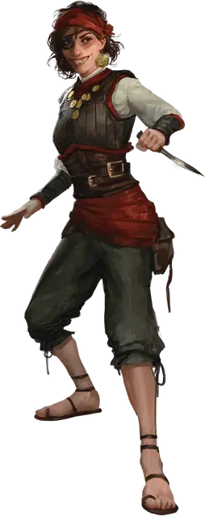

Пират
Pirate
Средний или Маленький Гуманоид, Нейтральный

Класс Защиты 14 Инициатива +5 (15)
Хиты 33 (6к8 + 6)
Скорость 30 футов
| мод | спас | ||
|---|---|---|---|
| СИЛ | 10 | +0 | +0 |
| ЛОВ | 16 | +3 | +5 |
| ТЕЛ | 12 | +1 | +1 |
| мод | спас | ||
|---|---|---|---|
| ИНТ | 8 | −1 | −1 |
| МДР | 12 | +1 | +1 |
| ХАР | 14 | +2 | +4 |
Чувства пассивное Восприятие 11
Языки Общий
Опасность 1 (200 опыта; БВ +2)
Действия
Мультиатака. Пират совершает две атаки Кинжалом. Он может заменить одну из этих атак использованием Пленительной бравады.
Кинжал. Бросок рукопашной или дальнобойной атаки: +5, досягаемость 5 фт. или дистанция 20/60 фт. Попадание: 5 (1к4 + 3) Колющего урона.
Пленительная бравада. Спасбросок Мудрости: Сл 12, одно видимое пиратом существо в 30 футах. Провал: Цель становится Очарованной до начала следующего хода пирата.
Бонус мастерства +2
Среда обитания Любая
Сокровища Личные, Инструментальные
Пираты
Флибустьеры и авантюристы
Понятие «пират» объемлет собой великое множество мореходов: здесь и безжалостные грабители, и упрямые каперы, и охотники за проклятыми сокровищами, и прочие авантюристы, чающие славы и богатства посреди солёных волн.
Пираты могут выступать как союзниками, так и врагами, а порой — играть роль непредсказуемой «тёмной лошадки», сочетая в себе все эти черты разом. Хотя они и предстают сущим бичом для купцов и прибрежных поселений, им ведомы тайны морей и способы избегать угроз, таящихся в пучине. Наиболее дерзкие и необычные пираты устремляют взор дальше линии горизонта. Они используют летучие корабли, астральные челноки, межпланарные суда или иной, ещё более диковинный транспорт, дабы грабить и исследовать пределы невообразимых миров.
Пиратские флаги
Дабы сеять ужас в сердцах противников и множить зловещую молву о себе, каждая пиратская команда поднимает над мачтами свой отличительный стяг. Совершите два броска по таблице «Пиратский флаг» для вдохновения или выберите сами, под каким знаменем ходит пиратская команда.
Пиратский флаг
| 1к8 | Флаг изображает… | Но не просто, а с… |
| 1 | Буканьера | Треуголкой |
| 2 | Дракона | Костями крест-накрест |
| 3 | Исчадие | Скрещенными клинками |
| 4 | Козла | Глазной повязкой |
| 5 | Кракена | Разрядами молнии |
| 6 | Русалку | Пивной кружкой |
| 7 | Череп | Татуировкой |
| 8 | Кита | Сундуком сокровищ |
Помимо того, что пираты — умелые бойцы, они ещё и опытные мореходы, знающие толк в управлении судном и поддержании его на плаву. Иные преданно следуют приказам капитана, однако многие ставят алчность, суеверный страх или заботу о собственной шкуре превыше долга.